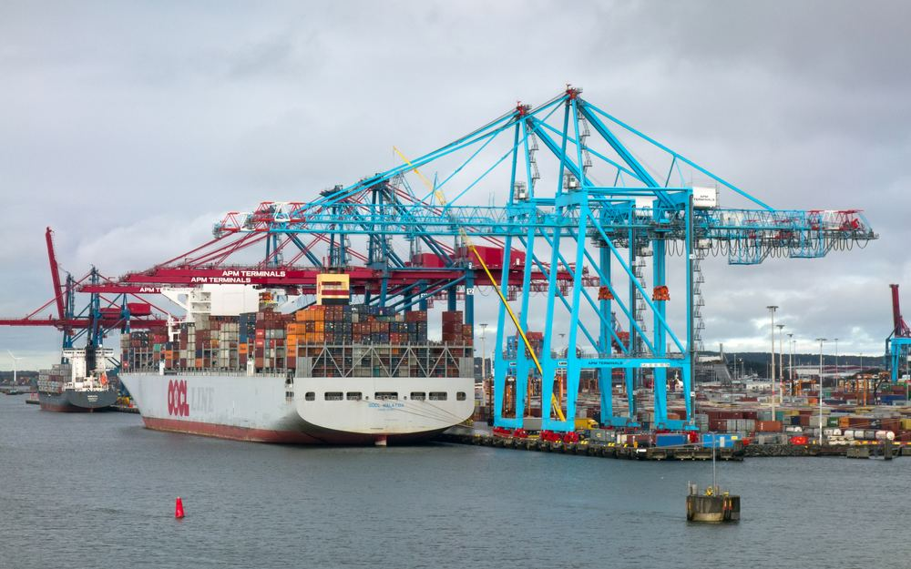
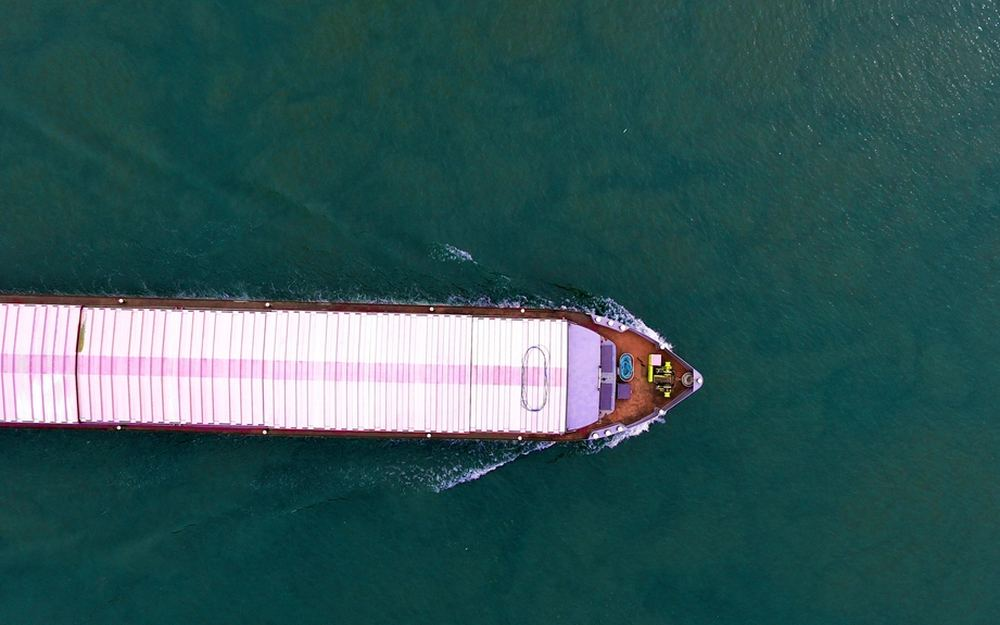
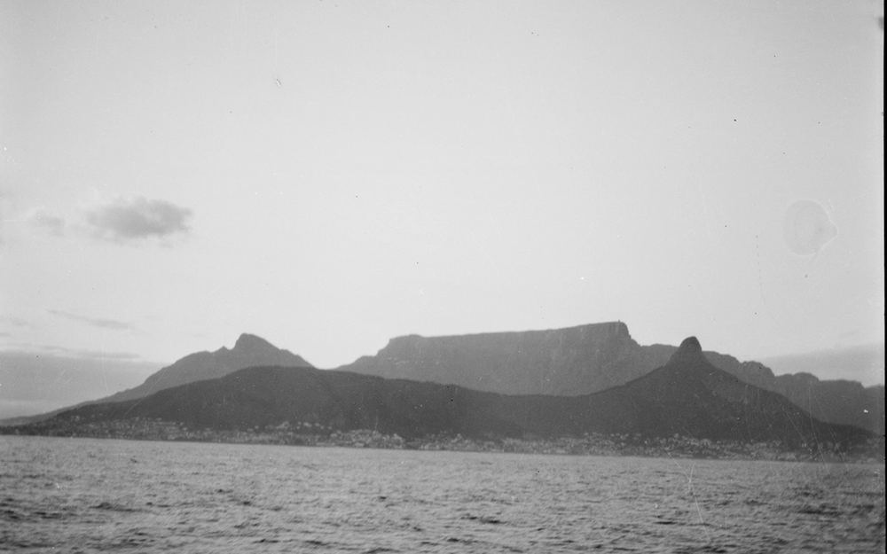
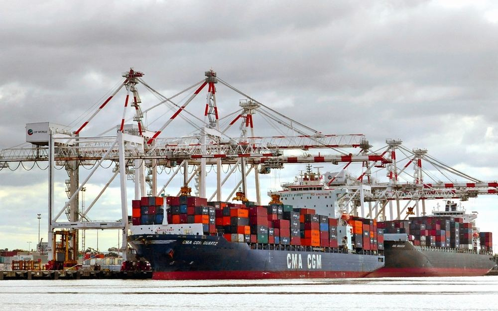
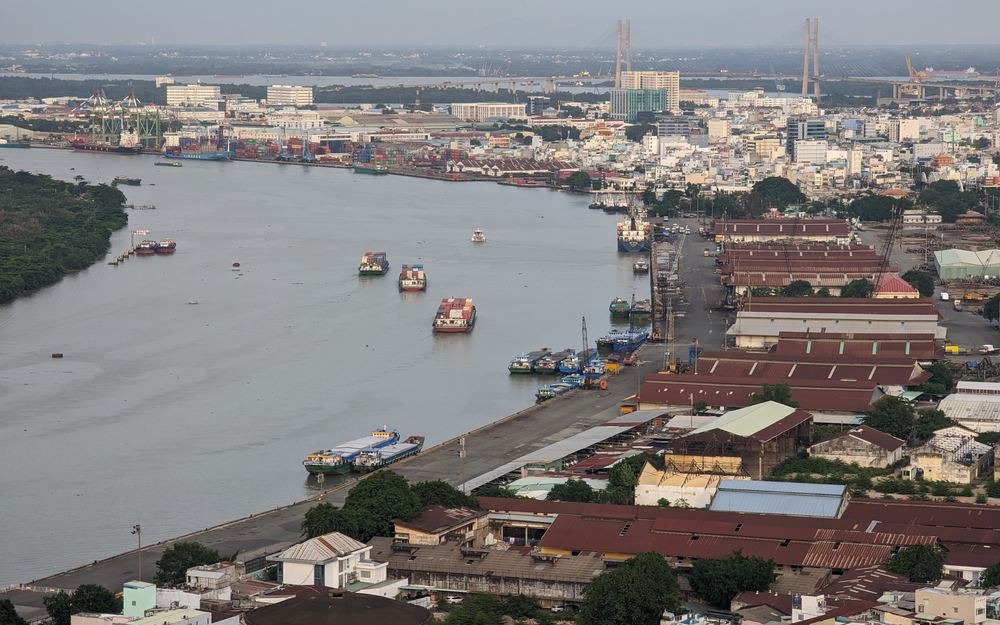

Route 01 · Feeder
Nordeuropa & Ostsee
Feederdienste ab Hamburg nach Skandinavien, ins Baltikum und nach Großbritannien – ideal für Just-in-time-Nachschub.
1–4Tage Transit12×pro Woche
53,5405° N · 9,9847° O — Hamburg, Speicherstadt
Nordmeridian steuert Ihre Fracht über 45 Länder – Seefracht, Luftfracht und Projektlogistik, überwacht von einem Kontrollturm, der niemals schläft.
// Leistungen
FCL und LCL über alle großen Fahrtgebiete – mit festen Kontingenten bei führenden Reedereien, auch wenn der Markt eng wird.
Mehr erfahren → 02Wenn Tage zählen: Charter, Konsolidierung und Express ab Hamburg und Frankfurt – mit Zollabfertigung aus einer Hand.
Mehr erfahren → 03Übermaß, Schwergut, Anlagenbau: Wir planen Transporte, für die es keine Standardlösung gibt – vom Kran bis zur Genehmigung.
Mehr erfahren →// Fahrtgebiete

Feederdienste ab Hamburg nach Skandinavien, ins Baltikum und nach Großbritannien – ideal für Just-in-time-Nachschub.

New York, Houston, Montreal: feste Stellplätze auf den großen Diensten, auch zur Peak Season.
Santos, Buenos Aires, Montevideo – inklusive Kühlcontainer für Lebensmittel und Pharma.

Kapstadt, Durban, Lagos: Projektladung und Maschinen mit Partneragenten in jedem Hafen.

Jebel Ali und Nhava Sheva über den Suezkanal – mit Umroutung ums Kap, wenn es nötig wird.

Shanghai, Singapur, Tokio: unser stärkstes Fahrtgebiet, mit eigenem Büro-Partner in Shanghai.
// Haltung
Seit 1888 lagert die Speicherstadt Waren aus aller Welt. Wir sitzen bewusst genau dort – zwischen Backstein und Fleet – weil Logistik für uns kein Rechenzentrum ist, sondern Handwerk mit Verantwortung. Jede Sendung hat bei uns einen Namen, eine Nummer und einen Menschen, der sie kennt.
— Henrik Volquardsen, Gründer & Geschäftsführer
// Eine Sendung
Unser Lkw holt den Container im Werk ab, die Ausfuhranmeldung läuft parallel. Bevor er am Terminal Burchardkai steht, ist er zollrechtlich frei.
Dank Kontingent bei der Reederei ist der Platz gebucht, auch wenn der Markt eng wird. Sie bekommen die Bill of Lading am selben Tag.
Wartezeiten am Kanal, Wetter im Roten Meer: Weicht die ETA um mehr als sechs Stunden ab, erfahren Sie es von uns – nicht von Ihrem Kunden.
Beim Transshipment auf den Feeder nach Shanghai prüft unser Partneragent jeden Container einzeln. Status-Update im Portal, in Echtzeit.
Importzoll, Lkw bis zur Rampe, unterschriebener Liefernachweis als PDF. Eine Sendung, ein Ansprechpartner, 34 Tage.
// Kontrollturm
Unser Kontrollturm in Hamburg überwacht jede Sendung rund um die Uhr: ETA-Abweichungen, Zollstatus, Umschlagpunkte. Bei Störungen handeln wir, bevor Sie davon erfahren – und informieren Sie trotzdem zuerst.
// Nächster Schritt
Angebot innerhalb von 24 Stunden – garantiert, werktags wie samstags.